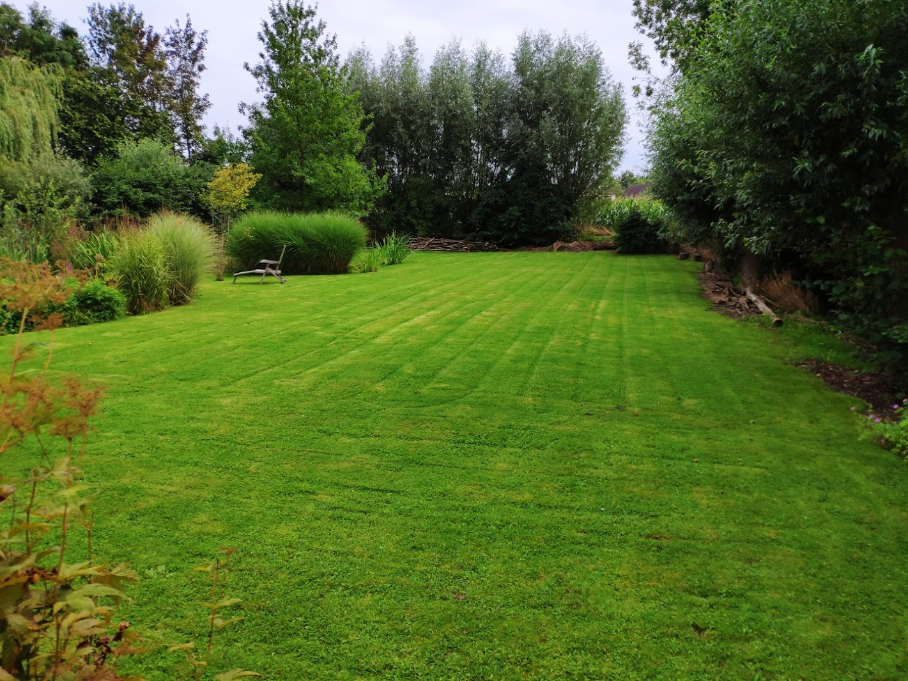
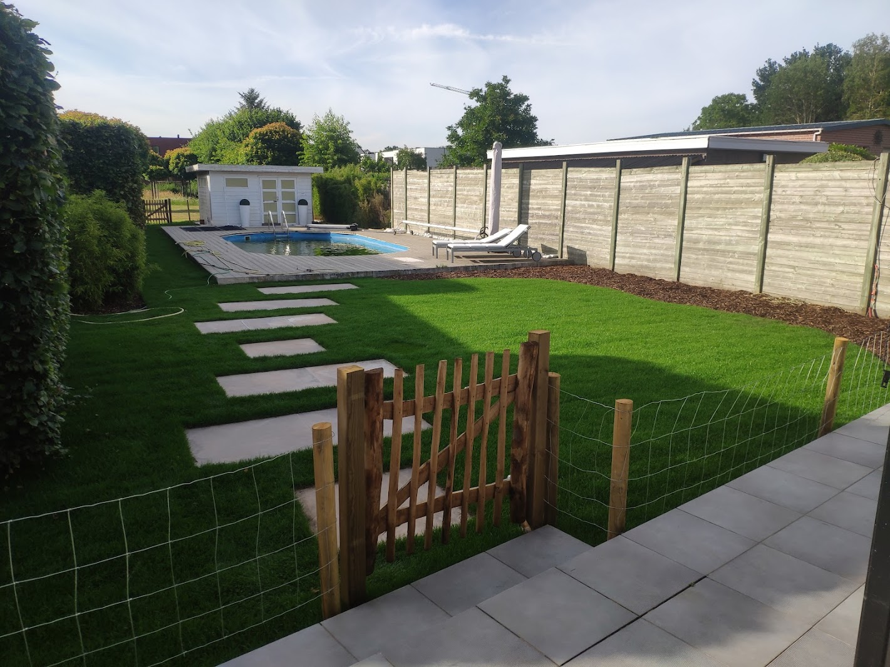
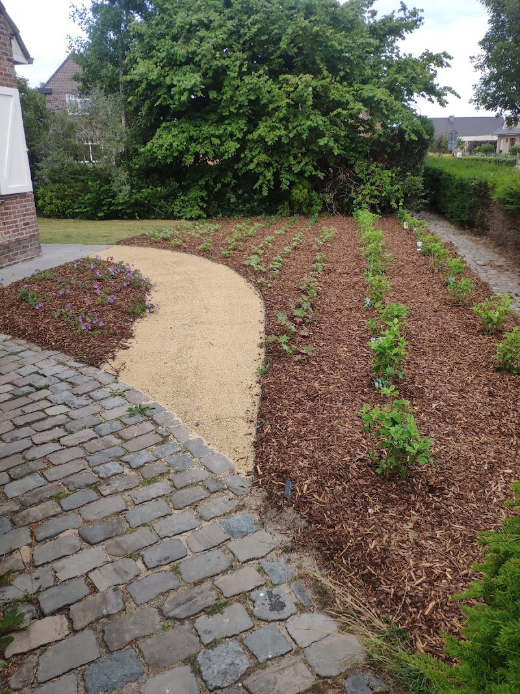
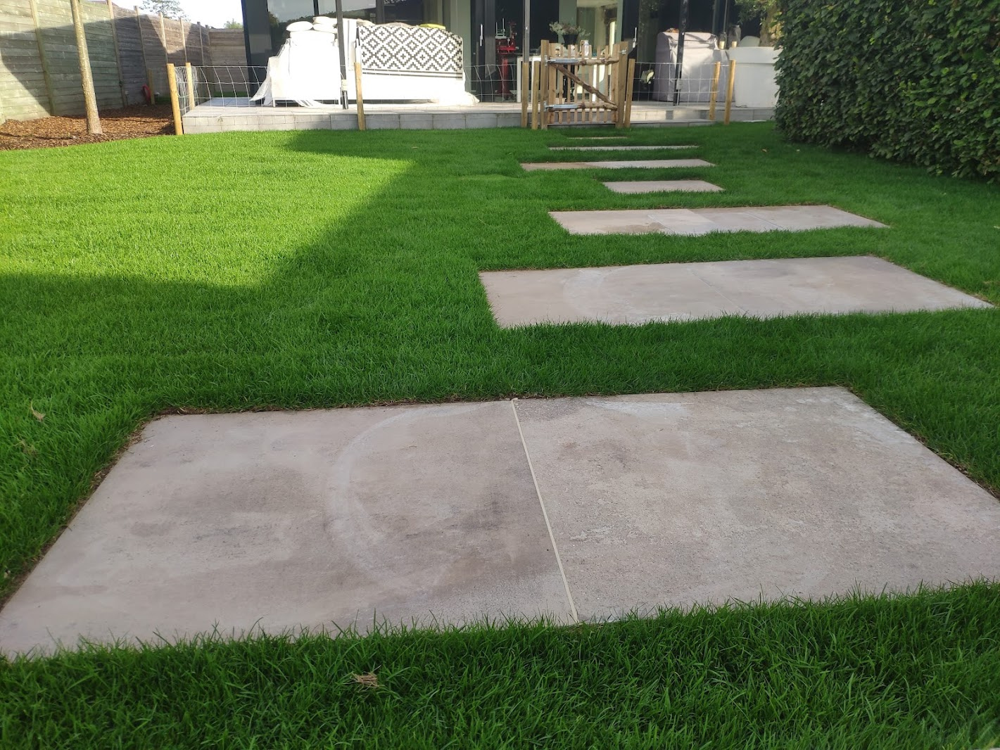
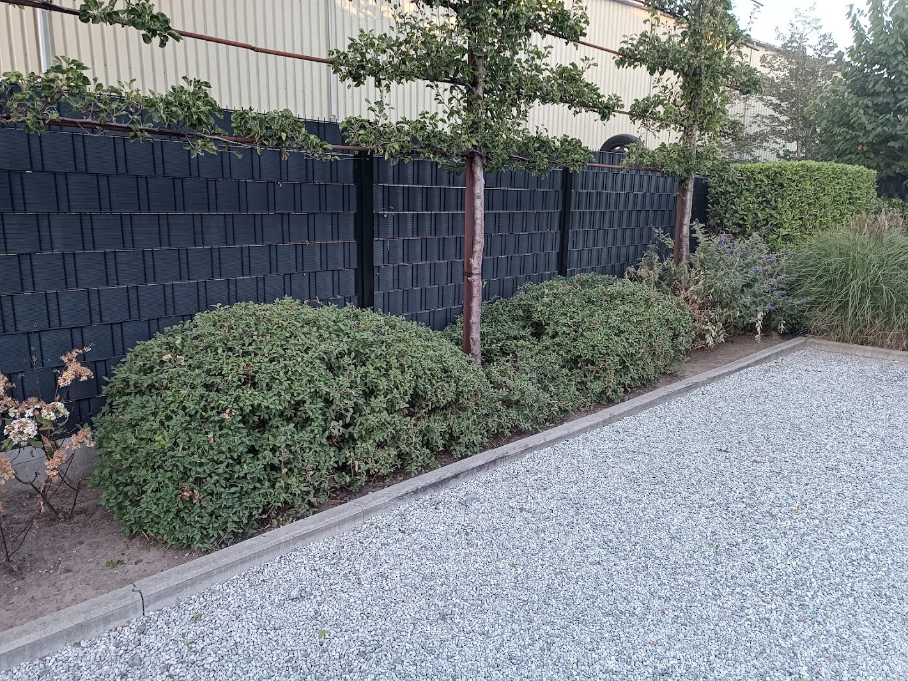
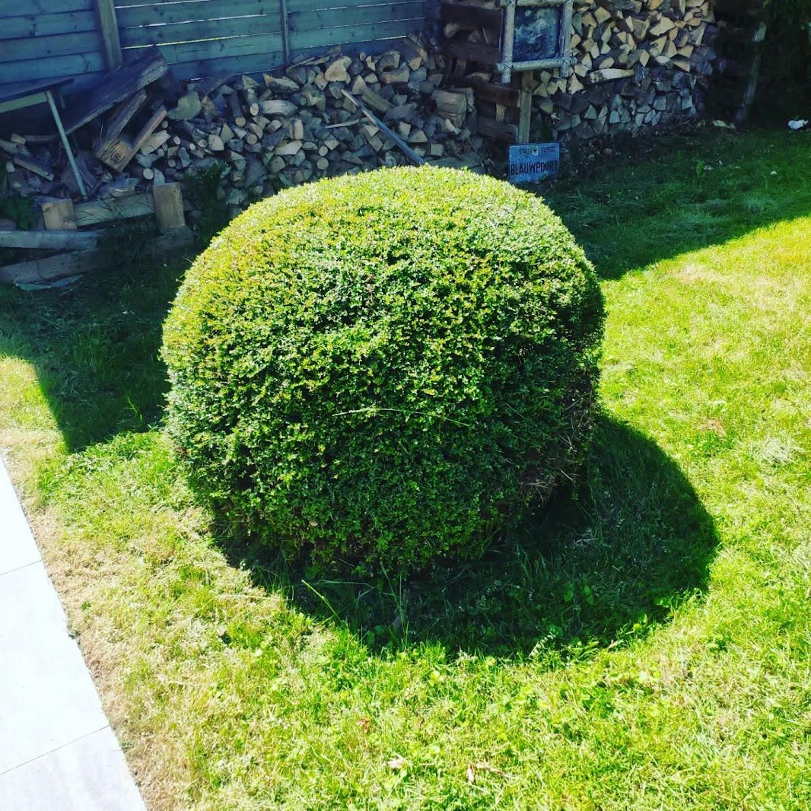

Tuinontwerp op maat
Een plan dat past bij uw woning en hoe u buiten leeft.

Ontwerp, aanleg, gazon, snoeiwerk en onderhoud. Hard werk aan een eerlijke prijs.
5,0 op Google · 12 reviews
Tuinen prode zijn 2 jonge kerels, harde werkers die onze tuin helemaal hebben afgegraven en opnieuw ingezaaid met een mooi resultaat. Ze leverden uitstekend werk voor een eerlijke prijs. Als je tuinwerk hebt raad ik deze jongens zeker aan!
Hard werkende jongeman met ‘handen aan het lijf’, die weet van aanpakken. Zeer correct en klantvriendelijk. En een zeer goede prijs voor de geleverde werken. Zeker een aanrader!
Doet elk jaar de tuin sinds dat hij hem helemaal heeft aangelegd en kwa prijs de goedkoopste die ik gevonden heb. Echt top kwaliteit.
Eén aanspreekpunt voor de hele tuin, van een nieuw plan tot het onderhoud erna.
Een plan dat past bij uw woning en hoe u buiten leeft.
Van afgraven tot de laatste plant op zijn plaats.
Afgraven, bodem voorbereiden en opnieuw inzaaien.
Hagen, heesters en bollen die strak in vorm blijven.
Bomen tijdig snoeien zodat ze gezond blijven.
Elk jaar terug, zodat uw tuin verzorgd blijft.






Een jong tuinbedrijf uit Deinze dat graag de handen uit de mouwen steekt. Dit zeggen klanten het vaakst:
Bel of mail gerust. We bekijken samen wat u wilt en u krijgt een duidelijke offerte.